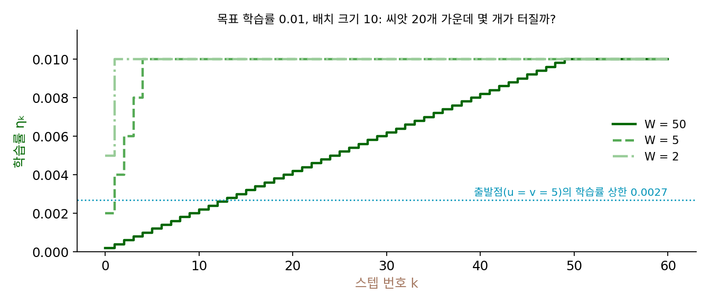
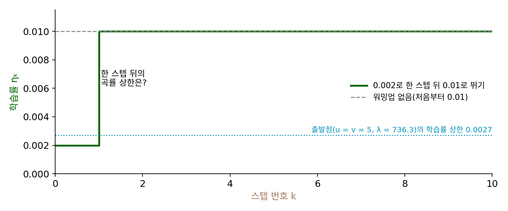
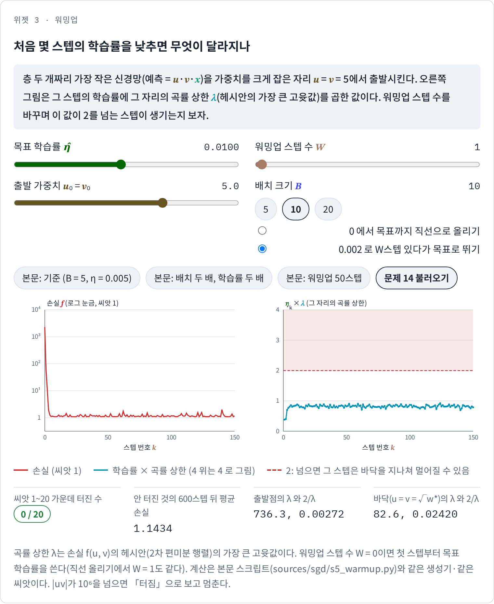

워밍업: 처음 몇 스텝은 학습률을 천천히 올린다
선형 배율 규칙대로 배치를 키우면서 학습률을 키우면 끝의 노이즈 플로어는 그대로 지킬 수 있었다. 그런데 이 규칙을 내세운 고얄과 동료들(2017)은 이 규칙이 신경망이 빠르게 바뀌는 학습 초반에는 깨진다고 적었다. 경사하강에서 이미 비슷한 일을 보았다. w⁴/4처럼 바닥에서 멀어질수록 곡률이 커지는 손실은, 바닥 근처에서 안전한 학습률로도 먼 출발점에서는 터졌다. 신경망의 처음 파라미터가 그런 「먼 출발점」이라면, 학습 끝에 쓸 학습률을 처음부터 쓰면 안 될 것이다. 그렇다고 학습률을 내내 작게 두면 느린데, 처음 몇 스텝만 어떻게 하면 될까?
역사: ResNet-110의 0.01과 고얄 외의 점진 워밍업
허와 동료들은 ResNet 논문에서 CIFAR-10으로 110층짜리 망을 학습할 때 처음 학습률 0.1이 수렴을 시작하기에는 조금 크다는 것을 알았다. 그래서 훈련 오차가 80% 아래로 내려갈 때까지(약 400스텝) 0.01로 학습하다가 0.1로 돌아갔다. 낮은 학습률로 잠깐 걷고 원래 학습률로 돌아가는 이 방법을 고얄과 동료들은 「일정한 워밍업(constant warmup)」이라 불렀다.
고얄과 동료들은 배치 크기 8192에서 학습률 3.2를 쓰려다 이 방법으로는 모자라다는 것을 알았다. 처음 5 에포크를 0.1로 학습한 뒤 3.2로 올리자, 낮은 학습률에서 벗어나는 순간 훈련 오차가 튀었다. 그래서 학습률을 0.1에서 시작해 스텝마다 같은 양씩 올려 5 에포크 뒤에 3.2에 닿게 하는 「점진 워밍업(gradual warmup)」을 냈다. ResNet-50의 이미지넷 검증 오류율(다섯 번 학습의 평균)은 다음과 같았다.
| 설정 | 배치 크기 | 학습률 | 검증 오류율 |
|---|---|---|---|
| 기준 | 256 | 0.1 | 23.60 ± 0.12% |
| 워밍업 없음 | 8192 | 3.2 | 24.84 ± 0.37% |
| 일정한 워밍업 (0.1로 5 에포크) | 8192 | 3.2 | 25.88 ± 0.56% |
| 점진 워밍업 (0.1 → 3.2, 5 에포크) | 8192 | 3.2 | 23.74 ± 0.09% |
워밍업이 없으면 기준보다 1.2%포인트쯤 나빴고, 논문은 이 1.2%포인트가 대부분 훈련 오차가 높아서 생겼다고 보았다. 점진 워밍업을 하자 훈련 곡선이 작은 배치의 곡선과 거의 겹쳤다.

처음에 학습률을 작게 했다가 올리는 건 너무 당연해 보이는데요. 허도 0.01로 시작했잖아요.

고얄과 동료들도 0.1로 5 에포크를 머물렀어요. 표에서 그 방법은 어땠죠?

25.88%요. 워밍업이 없는 24.84%보다도 나빠요. 작게 시작했는데 오히려 나빠졌네요.

언제 올려도 되는지 알려 주는 눈금이 없었어요. 허는 훈련 오차가 80% 아래로 내려가는 것을, 고얄과 동료들은 에포크 수를 표지로 썼어요. 둘 다 신경망 안에서 무엇이 바뀌었는지를 직접 잰 값은 아니에요.

음, 안에서 바뀌는 걸 재려면… 경사하강에서 학습률의 상한을 정한 건 곡률이었으니까, 헤시안을 재면 될 것 같은데요.

파라미터가 n개면 헤시안은 n × n이에요. 이미지넷을 학습하는 ResNet-50에서 그걸 학습 도중에 통째로 계산하는 건 엄두를 낼 수 없는 크기예요. 그래서 손에 잡히는 표지가 훈련 오차나 에포크 같은 바깥 숫자였죠.

그럼 파라미터가 둘뿐인 망이면 곡률을 스텝마다 잴 수 있겠네요. 처음 자리의 곡률이 크고 학습하면서 줄어든다면, 학습률은 그 곡률을 따라 올리면 되는 걸까요?
층 두 개짜리 신경망을 큰 가중치에서 출발시키기
배달 1000건 회귀를 가장 작은 신경망으로 바꿔 보자. 1km당 걸리는 시간을 w 하나로 두는 대신 두 가중치의 곱 u·v로 두면, 예측 u·v·x는 층이 둘인 선형 신경망에서 가중치 하나씩만 남긴 꼴이 된다. 처음 가중치를 크게 잡아 u = v = 5에서 출발한다(예측은 1km당 25분으로, 실제 4분과 한참 다르다). 이 출발점은 설명을 위해 고른 것이다.
이 손실은 자리마다 곡률이 다르다. 손실의 2차 편미분을 모은 헤시안의 가장 큰 고윳값, 곧 파라미터 (u, v)의 한 점에서 가장 가파르게 휜 방향의 곡률 λ을 재면 출발점에서는 736.3이고, 바닥(u = v = 2.00)에서는 82.65다. 학습률의 상한 2/λ으로 바꾸면 출발점에서는 0.0027, 바닥에서는 0.0242다. 바닥에서는 안전한 학습률도 출발점에서는 아홉 배쯤 크다.
기준으로 배치 크기 5, 학습률 0.005로 학습하면 씨앗 20개 모두 무사히 내려가고, 600스텝 뒤 손실의 평균은 1.1405다. 선형 배율 규칙대로 배치 크기를 10, 학습률을 0.01로 두 배씩 키워 보자. 0.01은 바닥의 상한 0.0242보다 작지만 출발점의 상한 0.0027보다는 크다. 씨앗 20개 가운데 14개가 터진다. 씨앗 1을 따라가면 첫 스텝의 학습률 × 곡률이 7.36으로 2를 한참 넘어, u와 v가 5에서 −6.32로 바닥을 지나쳐 반대쪽으로 날아간다. 그다음은 19.13, −769.9이고, 네 스텝째에 곱 uv가 10¹⁵을 넘는다.
같은 배치 크기 10, 목표 학습률 0.01에서 처음 50스텝 동안 학습률을 0부터 0.01까지 직선으로 올려 보자. 씨앗 20개 모두 무사하고, 600스텝 뒤 손실의 평균은 1.1434로 기준 1.1405와 거의 같다. 씨앗 1에서 학습률이 0.001인 5스텝째에 u = v = 3.26으로 내려와 곡률이 289로 줄고, 학습률이 0.004인 20스텝째에는 2.02까지 내려와 곡률이 85로 바닥과 거의 같아진다. 스텝마다 학습률이 오르는 비율보다 곡률이 내려오는 비율이 커서, 600스텝 내내 학습률 × 곡률은 0.98을 넘지 않는다.
이렇게 처음 몇 스텝 동안 학습률을 작은 값에서 목표 학습률까지 올리는 것을 워밍업 (학습 초반에 학습률을 천천히 올리기 / learning rate warmup)이라 한다. 직선으로 올리는 워밍업은 다음 식이다.
둘째 식은 워밍업이 지키려는 것이다. 학습률의 상한 2/L을 스텝마다 그 스텝의 파라미터 θₖ에서 잰 곡률로 따진 것인데, 학습 초반에 곡률이 크고 학습이 진행되며 곡률이 줄어든다면, 학습률을 곡률이 줄어드는 만큼 천천히 올려서 이 부등식을 지킬 수 있다. 확률적 경사하강에서는 노이즈까지 더해지므로 곡률이 큰 곳에서 학습률이 크면 더욱 위험하다.
ML에서: 거의 모든 큰 모델의 첫 설정
워밍업은 이제 큰 모델 학습의 기본 설정이다. GPT-3는 3000억 토큰 학습의 처음 3억 7500만 토큰 동안 학습률을 직선으로 올렸고, 그 뒤 코사인으로 줄였다. 워밍업 다음 코사인이라는 이 스케줄 조합은 언어 모델과 이미지 모델 모두에서 흔히 보인다. 신경망에서 학습 초반에 무엇이 그렇게 빨리 바뀌는지, 그리고 곡률이 학습 동안 어떻게 움직이는지는 그 자체로 연구 거리다. 실제 신경망의 곡률을 재며 학습률과 비교하는 일은 샤프니스(헤시안의 가장 큰 고윳값)를 다룰 때 본격적으로 한다.
문제 13. 워밍업은 몇 스텝이면 되나
층 두 개짜리 신경망(u = v = 5에서 출발, 배치 크기 10, 목표 학습률 0.01)에서 직선 워밍업의 스텝 수 W를 줄여 간다. (가) W = 50, 5, 2에서 씨앗 20개 가운데 몇 개가 터지는가? (나) W = 2면 첫 스텝의 학습률은 0.005다. 출발점의 학습률의 상한 0.0027보다 큰데도 왜 터지지 않는가? (다) 워밍업 스텝 수는 무엇에 맞춰 정해야 하는가?

출발점에서 0.0027보다 작아야 하니까, 0.01까지 올리려면 곡률이 다 내려올 때까지 몇십 스텝은 필요하겠죠. W = 50은 안전하고, 2는 터질 것 같아요.
위젯 3에서 W를 50, 5, 2로 놓아 봐요.
셋 다 0/20이에요. W = 2도 안 터져요. 첫 스텝 학습률 0.005에 출발점 곡률 736을 곱하면 3.7이라 2를 넘는데요?
그래프를 보니까 첫 스텝의 학습률 × 곡률은 2를 넘는데, 첫 스텝에서 u, v가 바닥 쪽으로 크게 줄어. u·v가 25에서 4 근처로 가려고 하는 스텝이니까. 한 스텝에 바닥을 지나치더라도 지나친 자리가 곡률이 작은 데면 거기서부터는 안전해.
그래요. 2/λ 조건은 「모든 스텝에서 손실이 준다」를 보장하는 넉넉한 조건이에요. 한두 스텝 넘었다고 반드시 터지지는 않아요. 그러면 W = 0이 14/20이나 터지는 건 무엇이 다를까요?

첫 스텝의 학습률 × 곡률이 7.36이면… 너무 멀리 지나쳐서 반대쪽의 더 가파른 곳에 떨어지는 것 아닐까요? 거기서 다시 더 멀리 튀고요.
그럼 3.7일 때는요?
지나쳐도 곡률이 작은 곳에 떨어지고요. 첫 스텝이 어디에 떨어지느냐가 갈랐네요.
그러면 (다)는요?

출발점의 곡률이 얼마나 빨리 내려오느냐에 맞춰야 해요. 층 두 개짜리 신경망은 곡률이 몇 스텝 만에 내려와서 짧은 워밍업으로도 되지만, 신경망에서 곡률이 천천히 내려오면 그만큼 길어야 해요.

고얄 논문은 5 에포크, GPT-3는 3000억 토큰 가운데 3억 7500만 토큰이니까 0.125%예요. 비율이 이렇게 다른 것도 학습 길이가 아니라 초반 곡률이 내려오는 데 걸리는 스텝에 맞췄다고 보면 이상하지 않네요. 운동할 때 준비 운동 시간은 본 운동 시간에 비례해서 늘리는 게 아니라 몸이 풀리는 데 걸리는 시간만큼 하는 것처럼요.
문제 14. 낮게 있다가 뛰기와 천천히 올리기
고얄과 동료들은 낮은 학습률로 머물다가 목표 학습률로 뛰는 일정한 워밍업이 배치 크기 8192에서 오히려 워밍업이 없는 것보다 나빴다고 보고했다(25.88% 대 24.84%). 층 두 개짜리 신경망(u = v = 5, 배치 크기 10, 목표 0.01)에서 (가) 학습률 0.002로 딱 한 스텝 걸은 뒤 0.01로 뛰면 씨앗 20개 가운데 몇 개가 터지는가? (나) 그 한 스텝 뒤 씨앗 1의 곡률 상한과 학습률의 상한은 얼마인가? (다) 층 두 개짜리 신경망과 논문(이미지넷)의 결과가 왜 다른지 어떻게 생각해 볼 수 있는가? (풀어 본 뒤 위젯 3의 「문제 14 불러오기」로 확인해 보자.)

논문에서 일정한 워밍업이 나빴으니까 여기서도 터지겠죠. 한 스텝이면 너무 짧기도 하고요.
위젯에서 확인해 봐요. 그리고 오른쪽 그림에서 둘째 스텝의 학습률 × 곡률도 보세요.
0/20이에요. 하나도 안 터져요. 0.002로 한 스텝 가니까 u = v = 2.74로 내려와서 곡률이 191.5, 학습률의 상한이 2/191.5 = 0.01045예요. 목표 0.01이 그 아래로 들어왔어요.
층 두 개짜리 신경망은 곡률이 첫 스텝에 736에서 191로 뚝 떨어져. 그러니까 낮게 머물든 천천히 올리든, 곡률이 내려온 뒤에 뛰기만 하면 돼. 논문의 이미지넷에서는 5 에포크를 0.1로 머물러도 학습률을 32배로 뛰기에는 곡률이 충분히 내려오지 않았던 거겠지.
논문이 실제로 적은 것은 「낮은 학습률에서 벗어나는 순간 훈련 오차가 튈 수 있다」까지예요. 왜 튀었는지를 곡률로 잰 것은 아니에요. 서연 학생의 설명은 그럴듯한 가설이고, 확인하려면 무엇을 재야 할까요?

학습 도중 실제 신경망의 헤시안의 가장 큰 고윳값을 재서, 뛰는 순간의 학습률 × 곡률이 2를 넘는지 봐야 해요. 장난감에서 재 본 것을 그대로 큰 신경망의 결론으로 옮기면 안 되고요. 반례 하나로는 정리를 무너뜨릴 수 있지만 예 하나로는 정리를 증명할 수 없는 것과 같아요.

점진 워밍업은 「언제 뛰어도 되는지」를 몰라도 되는 방법이라 편한 거네요. 실험 보고서에 「층 두 개짜리 신경망에서는 일정한 워밍업도 됐다」까지만 쓰고, 이미지넷도 그렇다고 쓰면 조교님한테 지적받겠어요.
